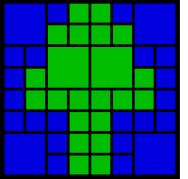

Last update: March 4, 1999
The object of this article to discuss different computer representations of pictures. Particularily, it focuses on a representation strategy which takes advantage of the data structure known as the quad tree. This article also discusses the advantages and disadvantages of the quad tree as a structure for computer graphics. Before going any further, we should define what is meant by a picture.
The definifition of a picture is a two-dimensional array, where the elements of the array are coloured points. This seems to be the most intuitive definition, and in fact 2-d arrays are most commonly used to store pictures on computers. Here is an example of an image represented as a two-dimensional array. Each pixel is an element of the array.
| 8 x 8 pixel picture represented in a two-dimensional array |
A two-dimensional array is not the only way to represent pictures, nor is it necessarily the most optimal.
A quad tree is a tree whose nodes either are leaves or have 4 children. The children are ordered 1, 2, 3, 4.
Here we will outline the strategy behind using quad trees as a data structure for pictures. The key is to "Divide and Conquer".
Let's say we divide the picture area into 4 sections. Those 4 sections are then further divded into 4 subsections. We continue this process, repeatedly dividing a square region by 4. We must impose a limit to the levels of division otherwise we could go on dividing the picture forever. Generally, this limit is imposed due to storage considerations or to limit processing time or due to the resolution of the output device. A pixel is the smallest subsection of the quad tree.
To summarise, a square or quadrant in the picture is either:
In terms of a quad tree, the children of a node represent the 4 quadrants. The root of the tree is the entire picture.
| First three levels of a quad tree |
To represent a picture using a quad tree, each leaf must represent a uniform area of the picture. If the picture is black and white, we only need one bit to represent the colour in each leaf; for example, 0 could mean black and 1 could mean white.
Note that no node may allow all its descendants to have the same colour. A minimum level of division must be maintained.
This is how the above image could be stored in a quad tree.
|  |
| 8 x 8 pixel picture represented in a quad tree |
| The quad tree of the above example picture. The quadrants are shown in counterclockwise order from the top-right quadrant. The root is the top node. (The 2nd and 3rd quadrants are not shown.) |
One way to efficiently store the quad tree in binary format is to use the following scheme:
|
|
|
| A scheme for storing quad tree representations of images. |
This is what the picture looks like in binary using the above scheme (only the first quadrant is shown, the rest can be easily deduced):
There are certain cases the quad tree implementation shown above is an efficient way of storing images. Such a case occurs often in satellite imaging, because there is usually large uniform regions along with small, detailed regions. For most applications, there is little improvement in storage. The advantage of using a quad tree does not lie in storage, but the speed of manipulation of an image. Before we discuss the advantages and disadvantages, we will first outline a quad tree ADT.
Definitions:
This is not the only quad tree ADT because we have made certain design decisions before hand. But it serves to illustrate the important features of a quad tree.
This ADT is an explicit quad tree, meaning every node is stored regardless whether it is displayed in the picture. Thus, there may be nodes stored on the tree that are in fact not accessed when displaying the picture on an output device. A node is not used if at least one of its ancestors is not transparent.
Note that if there are n pixels in the image, then it is easy to show that there are approximately 1.3n nodes in an explicit tree.
There are 4 primitive procedures:
1. Ancestor Check
Given a node as a parameter, Ancestor Check returns TRUE if the node is accessed to display the picture. If one of its ancestors is not transparent, then that quadrant will never be drawn.
The algorithm must check all the ancestors of the given node, starting at the root. If one of the ancestors is not transparent, the algorithm quits and returns FALSE.
2. Division to a Quad
During manipulation of an image, we may need to divide a uniform square into sub-squares. Given a node in the quad tree, it divided it into quadrants.
The algorithm is relatively simple. The algorithm checks the parent of the given node. If the parent is not transparent:
1.) store the colour of the parent
2.) make the parent transparent
2.) the 3 remaining children are created and the colour of the parent is transferred to the children.
The algorithm is then recursively called on the parent of the given node.
3. Tree Traversal
Given a node, Tree Traversal generates the sons of the node, and then repeats the process on each of the sons.
4. Reassembly
After the colour of a square is changed, it is possible that it has the same value of its tree brother nodes. If that is the case, the colour is transferred to the father to maintain the requirement of a minimum level of division.
Given a node as a parameter, the algorithm generates the brothers of that node. If all the nodes have the same colour, the colour is transferred to the parent and the algorithm is recursively called on the parent. Otherwise, the algorithm quits.
Why are quad trees used extensively in computer graphics? Mainly, quad trees can be manipulated and accessed much quicker than other models. For that reason, quad trees are very popular in fractal graphics. Recursive pictures can be implemented easily using quad trees: the root of the quad tree has four children, where one of the children is the actual image and the other three point to the root.
| A recursive image á la Escher. Click here for the source. |
Other advantages of quad trees include:
The only drawback of quad trees is that they take up a lot of space. If a quad tree is implemented using links, most of the memory will be taken up by the links. Nevertheless, there are ways of compacting quad trees, which is important for transferring data efficiently.
Quad trees have the ability to make image manipulation a very powerful process. The inherent recursive nature of quad trees turns a normally linear data structure into a recursive data structure. Consequently, images represented using quad trees are more dynamic, which is why they are well suited for image manipulation, imaging in geography and fractals.
| Rect Quadtree Demo | A Java Applet demonstration of the construction of an image using a quad tree. |
| Spatial Index Demos | Links to several quadtree demos, including the Rect Quadtree Demo. |
| Octree/Quadtree | Diagrams to illustrate the graphical implementation of a quadtree. |
| SCT DIY Quad-Tree Demo | An example of using the quad-tree to selectively compress an image. A java applet demonstration is included. |
| Quad-tree decomposition | Explanation of quad tree with useful references. |
| Geometry In Action: Quadtrees | A list of applications of quadtrees. |
| Manipulation d'images représentées récursivement | Using Quadtrees as a data structure for recursive pictures. Shows how to manipulate and display recursive images. |
This web page was created by Peter Carbonetto (pcarbo@po-box.mcgill.ca). Most of the figures were drawn using Adobe Illustrator and GraphicConverter. The webpage was created on a Macintosh computer using the the freeware text editor BBEdit Lite.
Please report any errors to Peter Carbonetto.